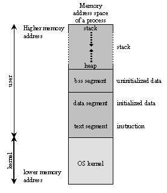

C++ a more in depth look into the language
Martin Nestorov
Created: 2018-01-03 ср 15:06
Who am I?
- Martin Nestorov
- Junior 2nd sem.
- I like to type . . . a lot
- email: mdn150@aubg.edu
- Twitter: @mnestorov
Why I chose to make these small tutorials
- People seem to have some problems with the transition from C++ to FDS.
- I want to help!
- I want to also learn!
How to look at C++
C++ as four sub-languages
- C
- OOP
- STL
- Templates
What we are going to cover
- File structure
- Memory management
- Templates
- Inheritance
- OOP
- STL
File structure
- Advantages:
- Better code organization
- Faster compiling
- Separation of implementation from interface
- Disadvantages:
- More complicated structure
How to work with header?
0: #include <iostream> //header we always include 1: #include "awesomeclass1.h" 2: #include "awesomeclass2.h" 3: #include "awesomeclass3.h" // our own class headers 4: 5: int main() 6: { 7: awesomeclass1 ac; 8: awesomeclass2 ac2; 9: awesomeclass3 ac3; 10: 11: ac.do_something(ac2); 12: 13: ac3 = ac; 14: 15: return 0; 16: }
Header guards
0: // x.h 1: class x { . . . }; 2: 3: // a.h 4: class a { X x . . . }; 5: 6: // b.h 7: class b { X x . . . }; 8: 9: // source.cpp 10: #include "a.h" // include x.h for the first time 11: #include "b.h" // error! include x.h again!
0: // x.h 1: #ifndef __X_H_INCLUDED__ 2: #define __X_H_INCLUDED__ 3: 4: class x { . . . }; 5: 6: #endif
Declarations vs Definitions
0: // declarations 1: extern int a; 2: extern char b; 3: class foo; // extern not allowed for user types 4: double sum(double, int); // no need for extern 5: 6: // definitions 7: int a; // the implementation of a 8: char c; // the implementation of c 9: double div(double a, int x) { return a / x; } 10: class foo { . . . };
When and how to use headers
class A ==> (uses) ==> class B
- do nothing if: A makes no references at all to B
- do nothing if: The only reference to B is in a friend declaration
- forward declare B if: A contains a B pointer or reference:
B* b; - forward declare B if: one or more functions has a B object/pointer/reference as a parameter, or as a return type:
B MyFunction(B myb); #include "b.h"if: B is a parent class of A#include "b.h"if: A contains a B object:B b;
0: #ifndef __X_H_INCLUDED__ 1: #define __X_H_INCLUDED__ 2: 3: // Forward declare dependencies 4: class F; 5: class B; 6: 7: // Include dependencies 8: #include <map> 9: #include "c.h" 10: 11: // Our current class 12: class myclass : public c 13: { 14: public: 15: std::map<int, char> matrix; // a map object that is required by our class 16: F* f; // F pointer, so forward declare F 17: void Func(B& b); // B reference, so forward declare B 18: 19: friend class MyFriend; // friend declaration is not a dependency 20: // don't do anything about MyFriend 21: } 22: #endif
Circular Dependencies
0: // b.h 1: #include "a.h" 2: class B { A* a; }; 3: 4: // a.h 5: #include "b.h" 6: class B { B* b; };
How does compilation work?
There are 3 steps of compiling C++ code:
- Preprocessing
- Compilation
- Compilation
- Assembly
- Linking
Compilation
- Step 1 - Compile
- Step 2 - Assemble
To get the object file we can run
g++ -c hello-world.ii
or
g++ -c hello-world.cpp
and we can then look inside what an object file looks like with
nm hello-world.o
or
objdump -t hello-world.o
Linking
The linker just links all of the object files into one executable file.

Conclusion
- Understanding undefined behavior better
- Understanding errors
- Good grip on how data is represented in C++
Memory management
The memory layout can be divided into five sections:
- text
- data
- bss
- stack
- heap / free store
Memory space in C++
This is all the space and data the program needs in order to run properly.
\[ address space = memory space \]

How to handle memory in C++
- Pointers
- Pass by value
- Pass by reference
Pass by reference in C
0: #include <stdio.h> 1: 2: void f(int *j) 3: { 4: (*j)++; 5: } 6: 7: int main() 8: { 9: int i = 20; 10: int *p = &i; 11: f(p); // or f(&i); will yield the same result 12: printf("i = %d\n", i); 13: 14: return 0; 15: }
Pass by reference in C++
0: #include <iostream> 1: 2: void f(int& a) 3: { 4: a += 1; 5: } 6: 7: int main() 8: { 9: int a = 5; 10: f(a); 11: std::cout << "a = " << a << std::endl; 12: 13: return 0; 14: }
References
Preprocessing, Compilation, and Linking
- https://en.wikipedia.org/wiki/Object_file
- https://www.toptal.com/c-plus-plus/c-plus-plus-understanding-compilation
- http://www.cplusplus.com/doc/tutorial/preprocessor/
- https://stackoverflow.com/questions/6264249/how-does-the-compilation-linking-process-work
- https://stackoverflow.com/questions/12122446/how-does-c-linking-work-in-practice/30507725#30507725
- http://www.iecc.com/linker/
- https://www.airs.com/blog/archives/38
- http://www.cirosantilli.com/elf-hello-world/
- https://stackoverflow.com/questions/3322911/what-do-linkers-do/33690144#33690144
- http://faculty.cs.niu.edu/~mcmahon/CS241/Notes/compile.html
- https://www.cprogramming.com/compilingandlinking.html
- http://www.cplusplus.com/articles/2v07M4Gy/
- http://www.tenouk.com/ModuleW.html
- http://www.tenouk.com/Bufferoverflowc/Bufferoverflow1.html
- http://nickdesaulniers.github.io/blog/2016/08/13/object-files-and-symbols/
- http://nickdesaulniers.github.io/blog/2016/11/20/static-and-dynamic-libraries/
- https://en.wikipedia.org/wiki/Object_file
- https://stackoverflow.com/questions/3880924/how-to-view-symbols-in-object-files
- https://stackoverflow.com/questions/69112/what-is-a-symbol-table
- https://codeyarns.com/2014/08/07/how-to-list-symbols-in-object-file/
Memory management
- https://stackoverflow.com/questions/3770457/what-is-memory-fragmentation
- http://www.tenouk.com/ModuleW.html
- https://stackoverflow.com/questions/2229498/passing-by-reference-in-c
- https://stackoverflow.com/questions/13654138/what-exactly-is-the-difference-between-pass-by-reference-in-c-and-in-c
- http://www.guideforschool.com/625348-memory-address-calculation-in-an-array/
- http://www.gotw.ca/gotw/009.htm
- http://www-cs-students.stanford.edu/~sjac/c-to-cpp-info/references
File Structure
- http://www.cplusplus.com/forum/articles/10627/
- http://www.learncpp.com/cpp-tutorial/19-header-files/
- https://stackoverflow.com/questions/333889/why-have-header-files-and-cpp-files
- https://www.cprogramming.com/declare_vs_define.html
- https://stackoverflow.com/questions/1410563/what-is-the-difference-between-a-definition-and-a-declaration
- http://aszt.inf.elte.hu/~gsd/halado_cpp/ch09s03.html
- https://stackoverflow.com/questions/4757565/what-are-forward-declarations-in-c